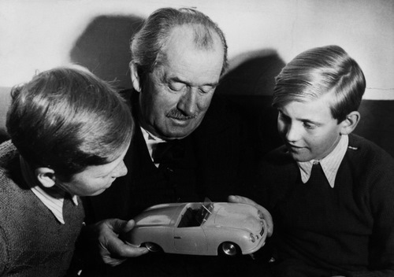

La historia del fundador: los primeros años. Ferry Porsche nació en Austria el 19 de septiembre de 1909, y desde que lo hizo su vida y destino estuvo marcado por el automóvil. El día que nació su padre, Ferdinand Porsche, estaba corriendo al volante de su Austro-Daimler de carreras construido por él mismo, obteniendo la victoria en su categoría, en la carrera de la subida a Semmering. Creció dentro del seno de una familia acomodada en la que todo giraba en torno al automóvil. Al joven Ferry le encantaba pasar el tiempo en la fábrica donde su padre trabajaba como ingeniero, deseando desde los 10 años crear su propio automóvil.
En la Navidad de 1919, su padre le regaló un pequeño biplaza con 6 CV, refrigerado por aire, con el que circulaba por las carreteras públicas. Aunque el pequeño vehículo ni siquiera disponía de placas de matrícula y el conductor evidentemente no tenía ningún tipo de permiso de conducir, el propio Ferry Porsche diría más adelante que “gracias a la posición de mi padre, la policía en Wiener Neustadt tendía a mirar hacia el otro lado cuando me veían acercarme por la carretera”.
Con tan solo 12 años, tuvo la oportunidad de conducir el vehículo de carreras “Sascha”, construido por Austro-Daimler en el circuito de pruebas de Wiener Neustadt en 1922. Estaba tan emocionado con este ganador de la Targa Florio, de 45 CV de potencia, capaz de alcanzar una velocidad máxima de 144 km/h, que pronto decidió construir su propia máquina de carreras. Pero este momento en el que su padre cambió de compañía no lo pudo llevar a cabo.
